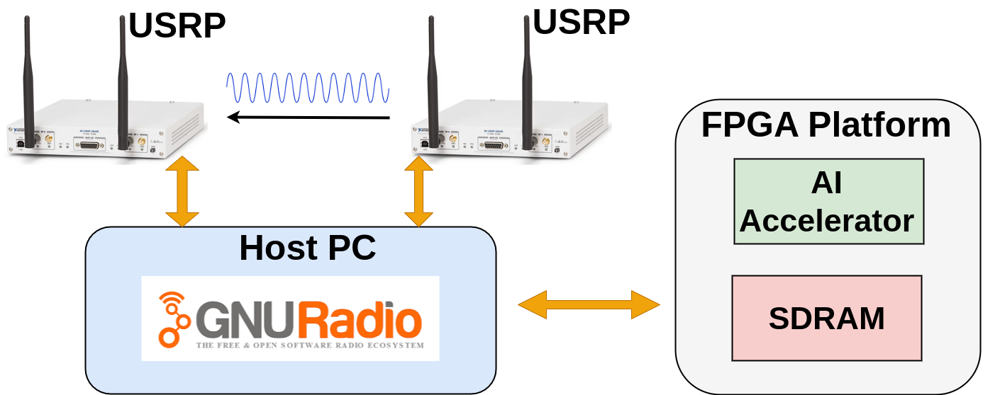
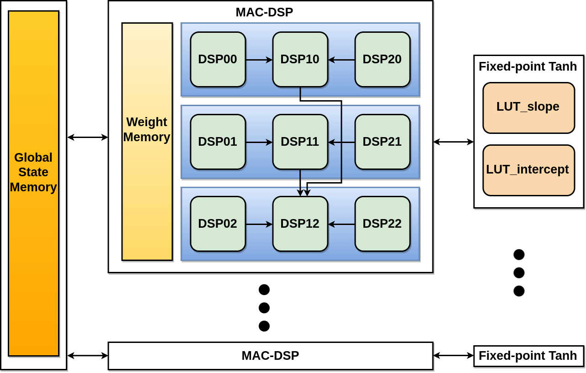
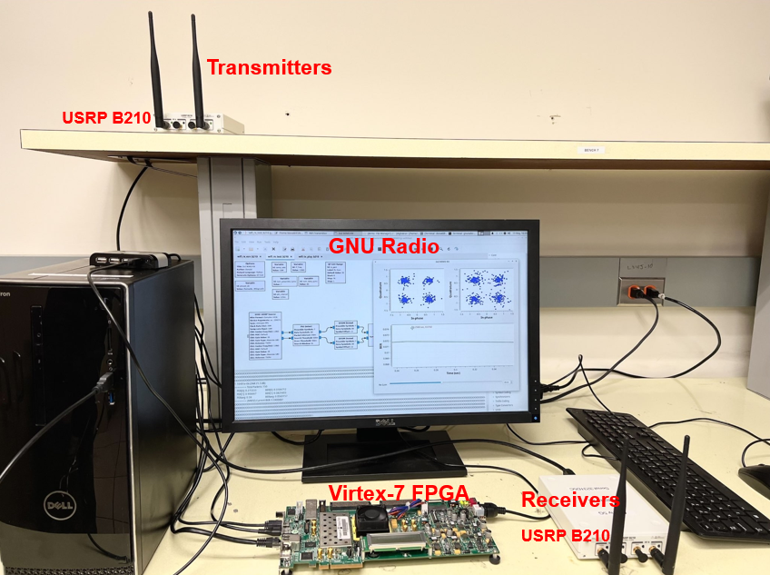
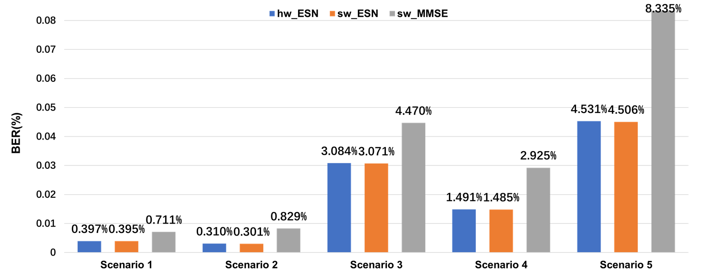

DSP-based ESN and SDR/FPGA platform for MIMO-OFDM detection
MIMO-OFDM symbol detection with conventional LMMSE depends on channel estimation and degrades in changing, multipath channels, while ML detectors are costly to put in hardware. This work builds an FPGA accelerator for an echo state network (ESN) symbol detector on a Virtex-7 board and demonstrates it in real time for 2x2 MIMO-OFDM on an SDR testbed with USRP radios and GNU Radio.
System setup
SDR/FPGA loop
A Wi-Fi radio system in GNU Radio on a host PC generates the transmit signal and sends it to the transmitting USRP; the receiving USRP passes the received signal to the FPGA. The FPGA-based ESN detects and recovers the OFDM symbols and returns them to the PC, where the bit error rate (BER) is measured against a conventional MMSE detector running in the same radio system.

Design
nine-DSP reservoir neuron
Each reservoir neuron performs its 48 multiplications and 47 additions (40 inputs + 8 reservoir states) with only 9 DSP48E1 slices, with weights in a per-neuron local memory and states in a shared global state memory. Stage I runs 9 parallel multiply-accumulates; Stage II joins the DSPs in groups of three over the dedicated PCIN/PCOUT cascade to compress 9 partial sums to 3; Stage III merges them into one sum using the {A:B} concatenation and the 3-input ALU.
Fixed-point tanh and word lengths
tanh is approximated piecewise-linearly: saturated to ±1 for |x| ≥ 8, otherwise slope·x + intercept, with slope and intercept read from two BRAM look-up tables of depth 2^8 and computed on another DSP. Inputs are normalised to (-0.1, 0.1) so output weights fit in (-700, 700) as 16-bit values (sign, 10 integer and 5 fractional bits); an 8-neuron reservoir was chosen as the second-best BER at much lower cost.

Real-world setup
The testbed combines a Xilinx Virtex-7 VC707 board running at 125 MHz, a host PC with GNU Radio, and USRP B210 transmitters and receivers. Tests ran in an RF lab with strong multipath, over 5 scenarios from a 10 m line-of-sight link to fully blocked non-line-of-sight links, each repeated for 3 trials.

Results
- Processing speed of 34.8 M input samples/s, 3.3× the 10.53 M samples/s of the earlier ESN FPGA accelerator for SISO-OFDM.
- Against that SISO design: 50% less BRAM and 33.3% fewer DSP blocks, at the cost of 21.4% more LUTs and 33% more FFs.
- Total utilization on the VC707: 13,314 LUTs (4.9%), 10,750 FFs (1.77%), 6 BRAMs (0.58%) and 108 DSPs (3.86%).
- Hardware ESN BER stays within 0.03% of the floating-point software ESN in all 5 scenarios (e.g. 4.531% vs 4.506% in scenario 5).
- ESN beats MMSE in every scenario, most clearly in poor channels: 4.531% vs 8.335% BER in scenario 5 and 3.084% vs 4.470% in scenario 3.
- Vivado power report at 125 MHz: 0.256 W dynamic, 0.262 W static and about 0.754 W total on-chip, with no timing violations.

Publication